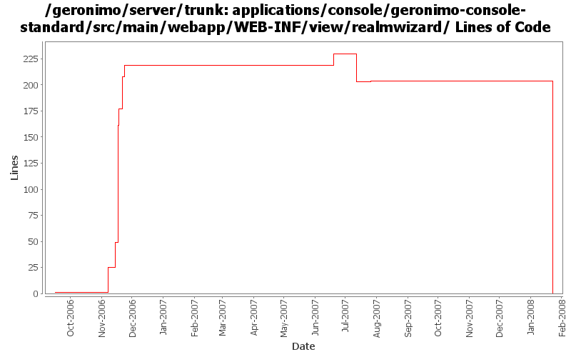

[root]/applications/console/geronimo-console-standard/src/main/webapp/WEB-INF/view/realmwizard

| Author | Changes | Lines of Code | Lines per Change |
|---|---|---|---|
| Totals | 56 (100.0%) | 251 (100.0%) | 4.4 |
| kevan | 12 (21.4%) | 128 (51.0%) | 10.6 |
| vamsic007 | 23 (41.1%) | 122 (48.6%) | 5.3 |
| dwoods | 1 (1.8%) | 1 (0.4%) | 1.0 |
| jdillon | 10 (17.9%) | 0 (0.0%) | 0.0 |
| gdamour | 10 (17.9%) | 0 (0.0%) | 0.0 |
(GERONIMO-3747) Moved applications/* to plugins/*
0 lines of code changed in 10 files:
GERONIMO-2534 Security realms portlet should validate the realm-name for duplicate name. Patch from Don Hill.
1 lines of code changed in 1 file:
GERONIMO-3311 Security Realms portlet is broken. Unable to edit realm.
o Fixed the JSPs to eliminate server-side option.
18 lines of code changed in 7 files:
GERONIMO-3251 PropertiesFile and SQL LoginModules should provide configurable "encoding" option for digest
o Added an encoding option to support hex and base64 encoding of passwords.
11 lines of code changed in 1 file:
GERONIMO-1880 To Allow configurable password digests during REALM Deployment
o Introduced a "digest" option in PropertiesFileLoginModule and SQLLoginModule
11 lines of code changed in 1 file:
JavaScript validation of "select" element is causing trouble in Internet Explorer unless value attribute is specified in option tag.
1 lines of code changed in 1 file:
GERONIMO-2533 Password setup forms should use a confirmation field
32 lines of code changed in 2 files:
GERONIMO-2537 Sneak in another license header change before the branch
16 lines of code changed in 1 file:
GERONIMO-2537 Integrating yet another patch supplied by Jay McHugh. Thanks Jaysvn status! Adds apache license header to files in applications/
112 lines of code changed in 11 files:
GERONIMO-1704 Console security realm doesn't let you pick a JAR
25 lines of code changed in 1 file:
GERONIMO-1592 Add NamedUPCredentialLoginModule to Console Realm Wizard
24 lines of code changed in 10 files:
GERONIMO-2378 Problems in JavaScript validation code forms.js
GERONIMO-2379 Security Realms portlet - form field validation using javascript
GERONIMO-2380 Keystores portlet - Form field validation using javascript
GERONIMO-2382 Webservers portlet - Form field validation using javascript
GERONIMO-2388 JMS Server portlet improvement - field validation, reset button and show current task
All these patches have been provided by Vamsavardhana Reddy. Thanks for that!
0 lines of code changed in 10 files: